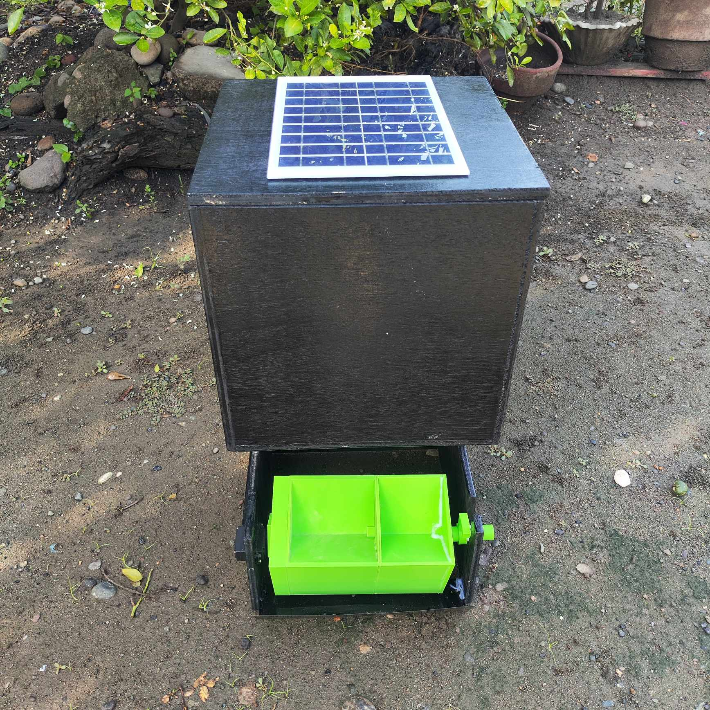

This project is a smart, energy-efficient, and portable feeding system designed specifically for poultry farms. It leverages IoT (Internet of Things) technology to automate the feeding process, ensuring optimal feed distribution and reducing manual labor. Powered entirely by solar energy, the system is eco-friendly and can operate in remote or off-grid locations.
